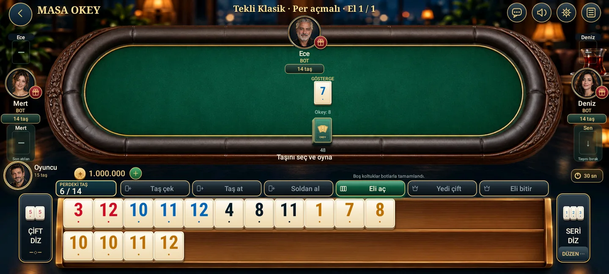

PROCİNALP / KLASİK OKEY
Okey Lounge
Klasik.
Tanıdık taşlar, kendine ait masa kuralları.
TEST PROJESİ · GENEL YAYIN DOĞRULANMADI


101 Lounge'dan ayrı bir oyun
Okey Lounge Klasik, mevcut proje belgelerinde klasik okey için ayrı tanımlanmış bir uyarlamadır. 101 Lounge'un puan eşiğini veya oynanışını buraya taşımıyoruz. Görselde de “Tekli Klasik · Per açmalı” masa seçimi okunuyor.
11 Ekim 2026 tarihli proje kaydı, bir sürümün dahili test kanalına gönderildiğini belirtir. Bu tarihli kayıt güncel Play Console durumunun yeniden kontrolü veya herkese açık mağaza yayını kanıtı değildir. Burada APK indirme, ödeme veya canlı hizmete katılım bağlantısı sunulmuyor.
Bu testin ayırt edici kuralı
İncelenen klasik kural belgesinde, oyuncunun taş aldıktan sonra el tamamlanmadan geçerli per açabilmesi seçilmiş. Bu, projenin özel masa tercihi; bütün klasik okey masalarının ortak kuralı olarak sunulmamalı. Açılış için 101 puan eşiği ve açık pere taş işleme bulunmuyor.
Örnek: aynı renkte 4–5–6 bir seri fikridir; aynı sayının farklı renkleri ise başka bir grup fikri. Önce elindeki fiziksel taşları ayrı düşün, aynı taşı iki grubun parçası gibi sayma. Bu örnek kuralı açıklamak içindir; gösterilen elin çözümü değildir.
Masadaki bilgileri nasıl okumalı?
Üst satır seçili oyun biçimini ve el sayısını gösterir. Ortadaki gösterge, okey taşını belirlemeye yarar; alt bölümde ıstaka ve hamle kontrolleri bulunur. İncelenen görüntüde bot etiketleri açıkça görünür. Bakiye, avatar ve masa görüntüsü test materyalidir; gerçek kullanıcı başarısı veya satış teklifi değildir.
“Perdeki taş” sayacı ile eldeki toplam taş sayısını karıştırma. Açılan gruplar ve ıstakada kalan taşlar, bu sürümün el bitirme denetiminde birlikte ele alınır. Masaya geçerken kural seçimini okumak, başka bir oyundan taşıdığın alışkanlığın yanlış hamleye dönüşmesini önler.
Kaynak ve sınırlar
26 Ekim 2026 incelemesi: Klasik Okey projesinin açıklaması, seçili klasik kurallar belgesi ve mevcut Android çizimlerinden masa görüntüsü. Yeni derleme veya canlı oyuncu testi yapılmadı. Eski 101 raporları bu oyun için yayın kanıtı sayılmadı.
Oyunları keşfet →